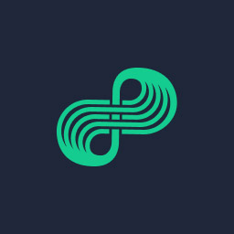

Nodle Network ✓ Open Bluetooth DePIN
Decentralized IoT & Physical Infrastructure Network via Smartphone Edge Nodes
What is Nodle Network? (The Bluetooth DePIN)
Nodle Network represents a massive paradigm shift in the Decentralized Physical Infrastructure Network (DePIN) sector. Unlike traditional projects that rely on renting your internet bandwidth or heavy CPU processing power, Nodle transforms your everyday smartphone into an edge-node IoT gateway using Bluetooth Low Energy (BLE) technology.
By passively running the app in the background, your phone securely discovers, tracks, and logs interactions with smart devices, lost items, and industrial internet-of-things (IoT) assets in your immediate physical vicinity. This creates a global "Trust Network" powered entirely by the devices already in people's pockets.
Blockchain Migration: Polkadot to ZKsync (L2)
Nodle has a deep history in the Web3 space. Originally built and launched as a prominent Parachain within the Polkadot Network, the project recently executed a massive architectural migration to ensure future scalability and multichain DeFi integration:
| ZKsync Era (L2) | The network officially migrated its core smart contracts and bridge deployment to the Ethereum Layer-2 ZKsync Era ecosystem on May 15, 2024. |
|---|---|
| Total Funding | Backed by Blockchain.com Ventures, Blockchange Ventures, and BootstrapLabs, raising approximately $9.7 million across seed rounds and Polkadot crowdloans. |
| Token Supply | A fixed maximum cap of 21 billion $NODL, with roughly 6 billion tokens currently in active circulation. |
| Trading Liquidity | The $NODL token is actively traded on major centralized exchanges (like Gate.io) and Web3 decentralized hubs (like SyncSwap). |
Core Technology Layers & Enterprise Utility
The Nodle Network generates revenue and utility through two distinct, highly scalable enterprise software layers:
📡 ConnectX (Asset Tracking)
The foundational infrastructure layer. It discovers and logs BLE-equipped physical assets onto an immutable ledger. It is heavily utilized for industrial logistics, retail inventory, and smart city deployments.
📸 ContentSign (Anti-Deepfake)
A crucial tool for media security. It provides C2PA-compatible digital watermarking, authenticating photos and videos directly at the hardware source to combat AI deepfakes and verify content provenance.
🤖 MCP AI Agent Integration
Nodle recently deployed an MCP (Model Context Protocol) server. This allows AI agents (like ChatGPT or Claude) to interact with the IoT tracking dashboards via plain natural language.
🚗 The Roole Partnership
Proving real-world utility, Nodle partnered with the mobility network 'Roole' in France. Over 40% of stolen vehicles in their system (valued at over €9 Million) were recovered using crowd-sourced Nodle location data.
Network Size & Passive Earning Mechanics
With over 2.4 Million Active Devices deployed worldwide across 100+ countries, Nodle relies on organic "Proof of Availability" mobile mining.
💸 How You Earn $NODL:
1. Zero Hardware Required: You do not need expensive ASIC rigs or dedicated antennas. Simply install the official Nodle App on your iOS or Android smartphone.
2. Passive "Missions": Once active, the app continuously scans for nearby BLE tags. It encrypts this beacon data and pushes it to the decentralized ledger. Rewards accumulate daily inside the app based on your node's uptime and structural coverage contribution.
3. The S-Curve Algorithm: 60% of the total 21 billion token supply is allocated purely to Mining Rewards, distributed asynchronously via an S-Curve algorithm to active Edge Nodes over time.
Network Compliance & Battery Management
Because Nodle operates exclusively via mobile devices, it is engineered to be as unobtrusive as possible:
🔋 Minimal Battery Drain
Unlike heavy CPU-mining apps, Nodle relies on Bluetooth Low Energy (BLE). It is specifically designed to run passively with negligible impact on your smartphone's daily battery life.
📶 Low Data Consumption
The app requires only a tiny fraction of background cellular data bandwidth to ping the encrypted packet routing tasks to the blockchain ledger.
📍 Mandatory Permissions
To function correctly, the app MUST be granted 'Bluetooth' access and 'Precise Location (Allow all the time)' permissions. The network cannot map IoT devices without exact geospatial telemetry.
🛡️ Privacy-First Architecture
Nodle anonymously passes structural tracking information (the payload). It does NOT gather, store, or upload your personal identification data, private communications, or browsing history.
Bridging Legacy Tokens (TCN Pro Tips)
If you are an early adopter who mined $NODL during the Polkadot era, you must utilize the official migration tools to access the new Ethereum L2 liquidity:
✅ The ZKsync Migration Bridge:
During the L2 chain shift, the Nodle Foundation deployed a specific Migration Bridge contract (0x5de7fefe...). This allows veteran holders to securely move their legacy native Polkadot assets over to the new ZKsync ERC-20 equivalents to trade on modern DEXs. Always verify you are using the official bridge link provided in the Nodle app or documentation portal to avoid phishing scams.
Complete Step-by-Step Setup Guides
Watch our complete video tutorials produced by Total Crypto Network. Follow the exact operational walkthrough for mobile deployment and token bridging: